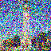

CS180 Project 5
Image Warping & Mosaicing
Kevin Yee
Overview
So in this project, it seems as though we're making our own diffusion models.
Part 0: Setup
So for this part I made a HuggingFace account, got my API token, and ran the first few cells to setup and download environment setup things,
followed by the generation of a feww images.
The first set of images is with num_inference_steps set to 20, and the second set is set to 30.


To me, it seems like the quality of the "man wearing a hat" seemed to substantially increase, going from an ai-esque generated image to what I would call a passable
if not somewhat artistically filtered image of a man wearing a hat. The snowy mountian definitley still seems quite stylized in the strange colorization of AI between the two generations,
while the rocket ship seems to have marginally improved from a PNG to a flash-game worthy sprite (with extra special booster effects).
The random seed I'm using for everything is: "137347080577163115"
Part 1: Sampling Loops
1.1 Implementing the Forward Process
For this part, it was basically implementing equation A.2 in the forward function which was basically the following:
Get alpha bar (alpha cumulative product), square root it, multiply it by the clean image, and add in the noise component.
1.2 Classical Denoising
I basically ran torchvision.transforms.functional.gaussian_blur over the noisy image, with a kernel size of kernel_size by kernel_size, and a sigma of 1.0.
Noisy 250
Gaussian 250
Noisy 500
Gaussian 500
Noisy 750
Gaussian 750
1.3 One-Step Denoising
The one step denoising if I understand it correctly and didn't just follow directions, basically takes the estimated noise that was added to the image, and then removes it. It's not quite the same thing as just removing the noise since it only takes the estimated noise from the trained UNet and then removes the predicted/estimated noise.
Noisy 250
Gaussian 250
Noisy 500
Gaussian 500
Noisy 750
Gaussian 750
1.4 Iterative Denoising
So iterative denoising: I'm pretty sure what we're doing is something along the lines of getting the UNet to predict the noise at each timestep, and then running it a whole bunch of times. Noise is iteratively added to the image, follwed by iterative denoising with the UNet.
t = 690
t = 540
t = 390
t = 240
t = 90
Iteratively Denoised dCampanile
One Step Denoised Campanile
Gaussian Blurred Campanile
1.5 Diffusion Model Sampling
So this part was basically taking in random noise from scratch instead of adding noise to an image, and generating images from there. i_start = 0 & just send it with random noise from torch.randn.
1.6 Classifier-Free Guidance
So for this part, conditional and unconditional noise is estimated with a fancy formula, epsilon_conditional and epsilon_unconditional. It takes the unconditional, and adds the difference of the conditional and unconditional multiplied by a gamma factor, or the strength of the CFG. Setting the gamma makes the image quality go brrr apparantly.
1.7 Image-to-Image Translation
So for this part, we add noise to the original image, and then iteratively denoise with CFG. More noise = bigger edit/more hallucinations/more space to be creative.
Coit Tower
Noise Level 1
Noise Level 3
Noise Level 5
Noise Level 7
Noise Level 10
Noise Level 20
Golden Gate
Noise Level 1
Noise Level 3
Noise Level 5
Noise Level 7
Noise Level 10
Noise Level 20

Campanile
Noise Level 1
Noise Level 3
Noise Level 5
Noise Level 7
Noise Level 10
Noise Level 20

1.7.1 Editing Hand-Drawn and Web Images
The hand drawn section I guess is more or less the same, where we try to bring the poorly drawn cursor images back into the "a high quality photo" manifold space.
Avocado (Internet Image)
Noise Level 1
Noise Level 3
Noise Level 5

Noise Level 7
Noise Level 10
Noise Level 20

Smiley Face Drawing

Noise Level 1

Noise Level 3

Noise Level 5

Noise Level 7

Noise Level 10

Noise Level 20
House Drawing

Noise Level 1

Noise Level 3

Noise Level 5

Noise Level 7

Noise Level 10

Noise Level 20

Original Drawing
1.7.2 Inpainting
So for inpainting, there's a mask of areas 0 & 1, where 0 is the area to keep unchanged, and 1 is the area to inpaint/replace with new information.
The mask is applied to the noisy image xt at each timestep t to ensure that areas outside of t he mask stay the same.
At each timestep I basically followed the equation 0 * xt + (1- 0)forward(x original t)

Campanile

Coit Tower

Golden Gate
1.7.3 Text-Conditional Image-to-Image Translation
Alright, same thing as the SDEdit, but instead with the prompt of "a rocket ship" instead, so that a rocket ship looks more and more like the campanile (and a few other landmarks as well).
Campanile

Noise Level 1

Noise Level 3

Noise Level 5

Noise Level 7

Noise Level 10

Noise Level 20
Campanile
Coit Tower

Noise Level 1

Noise Level 3

Noise Level 5

Noise Level 7

Noise Level 10

Noise Level 20
Coit
Golden Gate

Noise Level 1

Noise Level 3

Noise Level 5

Noise Level 7

Noise Level 10

Noise Level 20
Golden Gate
1.8 Visual Anagrams
For this part, we start with a noisy image, and then the noise estimate for epsilon1 for rightside up with the first prompt p1 is calculated, then the noisy image is flipped upside-down, and the noise estimate is computed for the upside-down version. And then the noises are averaged (epsilon1 + epsilon2) / 2, and then this epsilon average is used to complete the reverse diffusion step.
Campfire
Old Man

Snowy Mountian Village
Campfire

Snowy Mountian Village
Old Man
1.9 Hybrid Images
Factorized diffusion for things: two noise estimates, epsilon1 will have a lowpass filter to retain the low frequency, while epsilon2 gets a highpass filter to maintain the high frequencies. These two get added and are used as the sum epsilon (or noise estimate). I ran this a bunch of times and I didn't get super great results for any of them. I think the better results come out of things that are more abstract or perhaps have a bit more varience in the manifold or something like that, since alot of times I just got a landscape with a skull slapped in the middle of it.

Skull Waterfall
Coast Snowy
Pencil Rocket
Part B:
So for this part, a denoiser as a UNet was implemented, which mostly consisted of carefully reading the diagram and documentation of the blocks and implementing them as a class.
Conv blocks changing the channel dimension, DownConv which downsampled, UpConv which upsampled DFlatten which takes a 7x7 -> 1x1 tensor, Unflatten which upsamples from 1x1 -> 7x7, & Concat which channel-wise concatentats tensors.
To train the model, we were given an equation to optimize overe an L2 loss, where noise is applied dynamically during the training set, and then the images are passed through the UNet for predictions,
followed by a MSE calclation (equation) between the predicted clean image and the actual clean image. The gradient of the loss wrt the model;s parameters is calculated, and then the model's parameters are updated.
This is repeated for batches & epochs.

Epoch 1
Epoch 5